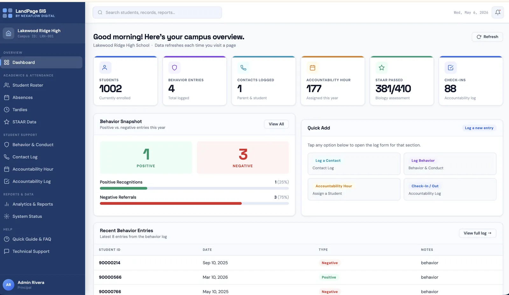
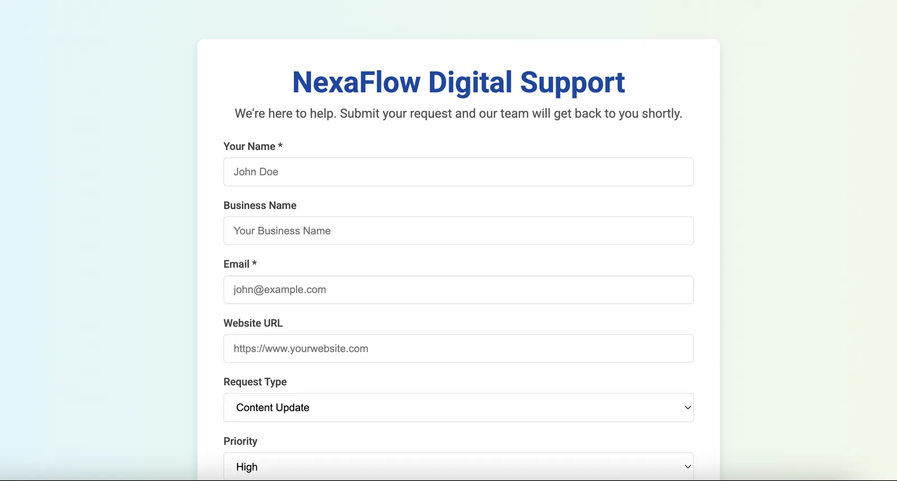
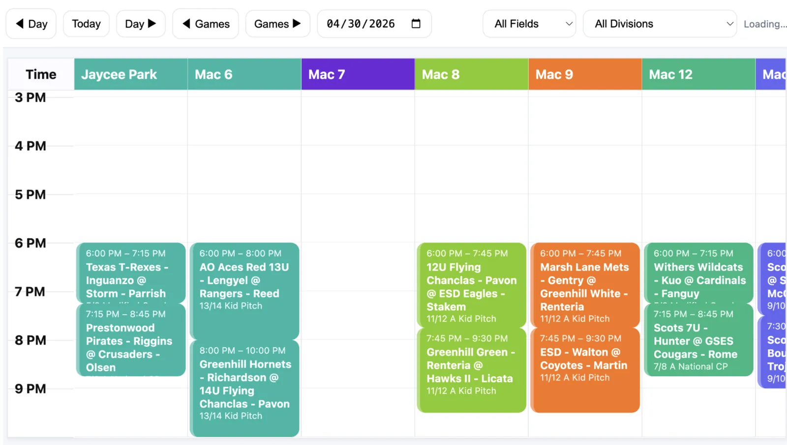
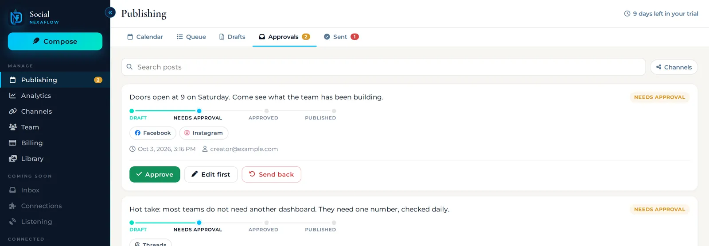

Home / Services / Custom Software & Automation
If your team runs on spreadsheets, copy and paste, and reminders, we build the tool that replaces it. Portals, trackers, and workflows that move work forward on their own.


Every build starts from how your team works today. These are the most common.
1 place for your team or your clients to log in, see what matters, and take action, with the right access for each role.
Apps built for a specific job your business depends on, from any browser, on any device.
Data moves between your systems on its own, so nobody copies and pastes the same information twice.
Reminders, confirmations, and alerts go out on time without depending on someone remembering.
New clients, hires, or requests flow through the same steps every time, with nothing skipped.
The spreadsheet your business quietly runs on, rebuilt as a real system that is safe, shared, and built to grow.
Click through tools that real organizations use every day.
Student records, behavior logs, and accountability tools in 1 portal, with the right access for each staff role.
Read the case studyRequests come in through 1 form, get sorted by type and priority, and trigger the right follow-up.
Open the live system
A league calendar turned into a filterable grid by field, day, and division that updates from the source calendar.
Read the case study
Posts move from draft to approval to published, and every step is tracked. This is the workflow behind our Social app.
Visit SocialSubmit a sample request and watch the steps an automated workflow takes without anyone touching it.
Submit the request to start the workflow.
Picture this running on your own process. Try our full automation demo
Every project follows the same 4 steps, so you always know what happens next.
We learn how your business works today and what the right result looks like. No assumptions.
You get a clear quote and plan, and you approve it before anything gets built.
We build in focused stages with check-ins, so you see progress and give feedback as we go.
We launch, walk your team through it, and stay available for changes after.
“We were tracking client jobs, invoices, and follow-ups across 3 different spreadsheets and still dropping things. NexaFlow Digital built us a custom portal that ties everything together. Our team actually uses it because it was built around how we work.”Tanya K., Founder, Professional Services, Dallas TX
Off-the-shelf software is built for the average of many businesses, so you adapt your process to fit it. Custom software is built for yours, so it fits your process. You are not paying per seat forever for features you do not use.
Yes. What we build is yours. We build the system around your business, hand it over, and stay available for support and changes after launch.
Usually, yes. Most of what we build pulls from or pushes to the systems you already rely on, so it fits into your setup instead of adding another disconnected tool.
It depends on how much manual work you do today. Our clients save 100+ hours per year on average, and some recover 15+ hours every week from a single automated workflow. We estimate the savings with you before we build.
Yes. We are based in Frisco, TX and work across DFW, including Plano, McKinney, Allen, Carrollton, Lewisville, and Dallas, plus clients nationwide.
Tell us what you need built, fixed, or automated. You get a clear quote and plan to approve before any work starts.